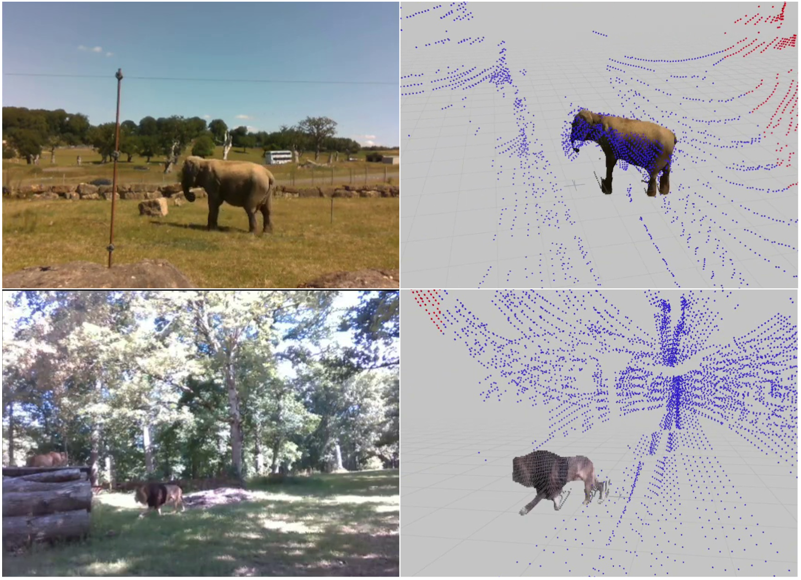
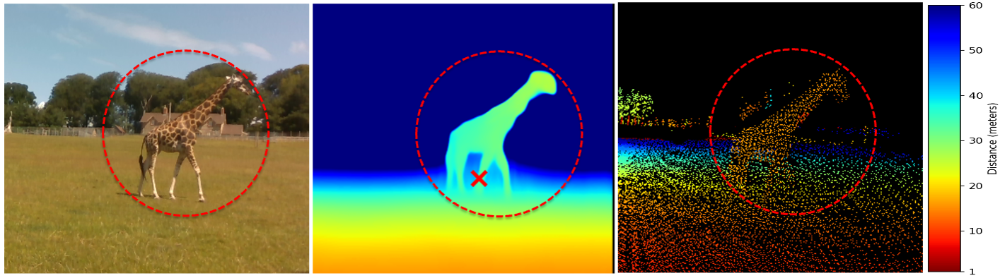
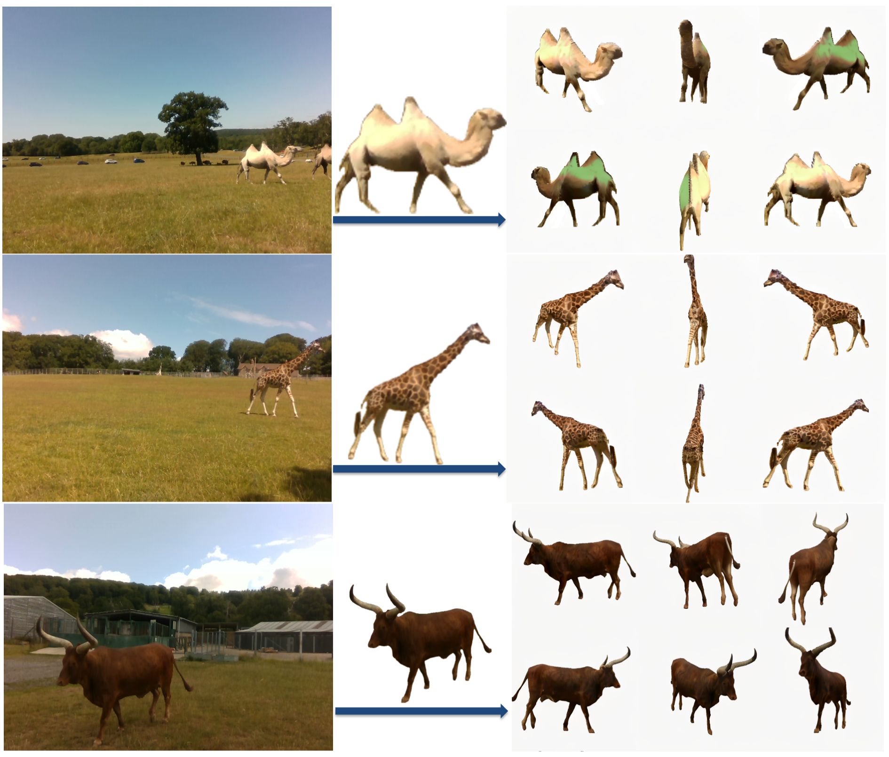
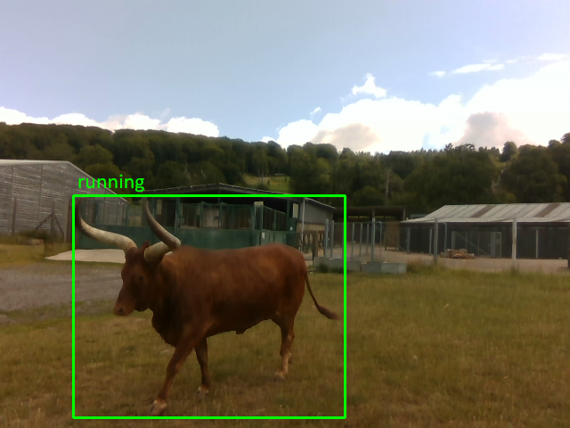
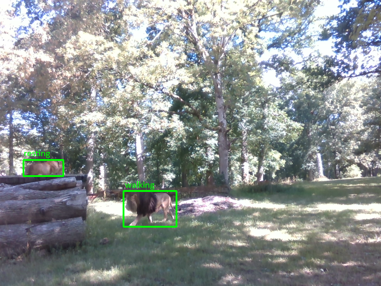

Depth estimation and 3D reconstruction have been extensively studied as core topics in computer vision. Starting from rigid objects with relatively simple geometric shapes, such as vehicles, the research has expanded to address general objects, including challenging deformable objects, such as humans and animals. In particular, for the animal, however, the majority of the existing models are trained based on datasets without metric scale, which can help validate image-only models. To address this limitation, we present WildDepth, a multimodal dataset and benchmark suite for depth estimation, behavior detection, and 3D reconstruction from diverse categories of animals ranging from domestic to wild environments with synchronized RGB and LiDAR. Experimental results show that the use of multi-modal data improves depth reliability by up to 10% RMSE, while RGB–LiDAR fusion enhances 3D reconstruction fidelity by 12% in Chamfer distance. By releasing WildDepth and its benchmarks, we aim to foster robust multimodal perception systems that generalize across domains.





Each video shows a 3-panel view: RGB input, LiDAR point cloud overlay, and depth map / colored point cloud. Select a snippet below to preview recordings from the Longleat Safari Park subset.
Pre-release version. More data is on the way with further refinement and improved calibrations.
@article{aamir2026wilddepth,
title = {WildDepth: A Multimodal Dataset for 3D Wildlife Perception and Depth Estimation},
author = {Aamir, Muhammad and Muramatsu, Naoya and Shin, Sangyun and Wijers, Matthew and Zhong, Jia-Xing and Hou, Xinyu and Patel, Amir and Loveridge, Andrew and Markham, Andrew},
journal = {arXiv preprint arXiv:2603.16816},
year = {2026},
doi = {10.48550/arXiv.2603.16816}
}